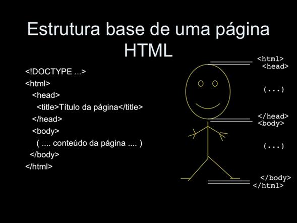

Entendendo o HTML
Índice
O que é HTML?Voltar
A primeira coisa que você precisa saber é que:
"HTML não é uma linguagem de progamação!"
Polêmico, né?! O HTML na realidade é um "Arquivo de Marcação". O HTML
servirá como "esqueleto" de sua página, é com ele que tu estrutura os códigos, digita os textos e faz o
protótipo da página, a estilização e responsividade é feita mais além através do CSS e JavaScript, embora tu
também consiga estilizar de maneira bem grosseira com o HTML.
O que são Servers e ClientsVoltar
-
Servers
São aqueles que enviam as informações através de um servidor. É um recurso de um sistema que é capaz de
processar aplicações, armazenar dados e prestar serviços.
-
Clients
Já os Clients são de fato 'clientes', que, através de uma máquina, solicitam esses serviços e reursos. São os
consumidores da internet, do arquivos e dos sites.
Estrutura básica do HTMLVoltar
A estrutura básica de um HTML funciona com basicamente 3
'TAGS' e elas funcionam como se fosse um corpo humano.
Essas tags são:
-
< html>
< /html>
Para que serve? ver tags
Essa tag é colocada no início e no fim do documento e serve para informar ao navegador a estrutura do site.
-
< head>
< /head>
Para que serve? ver tags
Dentro da tag 'Head' vai tudo (ou quase tudo) aquilo que o usuário não enxergará. Ela serve para armazenar
dados e
outras tags importantes do código.
-
< body>
< /body>
Para que serve? ver tags
E dentro da tag 'Body' acontecerá o oposto da 'Head', é tudo aquilo que é visível aos olhos do usuários,
desde
imagens até os textos.
*Caso ainda não tenha ficado claro a estrutura básica do site, deixarei abaixo uma obra de arte que explica de maneira "infantil" como funciona:

- < h1 >, < h2 > , < h3 >, < h4 >, < h5 > e < h6 > = São tags de título, quanto maior a numeração, menor será a fonte.
- < p > = Adiciona um parágrafo ao código.
- < mark > = Deixa o texto Marcado como se fosse um marca-texto de escola.
- < small > = Escreve uma palavra menor abaixo do texto, tipo assim. Confesso que não vejo tanta utilidade.
- < i > = Deixa o seu texto em Itálico
- < u > = O 'U' dessa tag vem da palavra "underline", ou seja, deixa ele sublinhado.
- < strong > = A palavra 'strong' significa forte, deixa seu texto em negrito.
- < ol > e < ul > = Essas duas tags são muito importantes e tu vai usar em praticamente todos os códigos. A 'OL' vem de Ordered List, ou seja, cria uma Lista Ordenada. Já a 'UL' é Unordered List e cria uma Lista Não Ordenada.
- < li > = A tag 'li' fica dentro das listas 'OL' e 'UL', essa tag 'li' são os itens da lista.
- < a > = A tag 'a' serve para criar uma Ancoragem usando o '=href', faz ancora com sites e navegações, na página ou fora dela.
- < hr > = Essa tag cria uma linha visual no site, deixa as divisões de conteúdos mais bonitas.
- < sub > = Deixa uma palavra abaixo das outras, tipo assim
- < sup > = Deixa uma palavra acima das outras, tipo assim.
- < blockquote > = Muito usado para citar referências de outros autores, essa tag deixa uma frase centralizada no site e diferente dos outros parágrafos.
- < br > = Essa tag eu não aprendi nas aulas, mas gosto bastante dela, o 'br' significa Breake, ou seja, ela "quebra" a linha, ela adiciona um espaço entre uma linha e outra, usei bastante nesse projeto.
Minhas ReferênciasVoltar
Redes Sociais